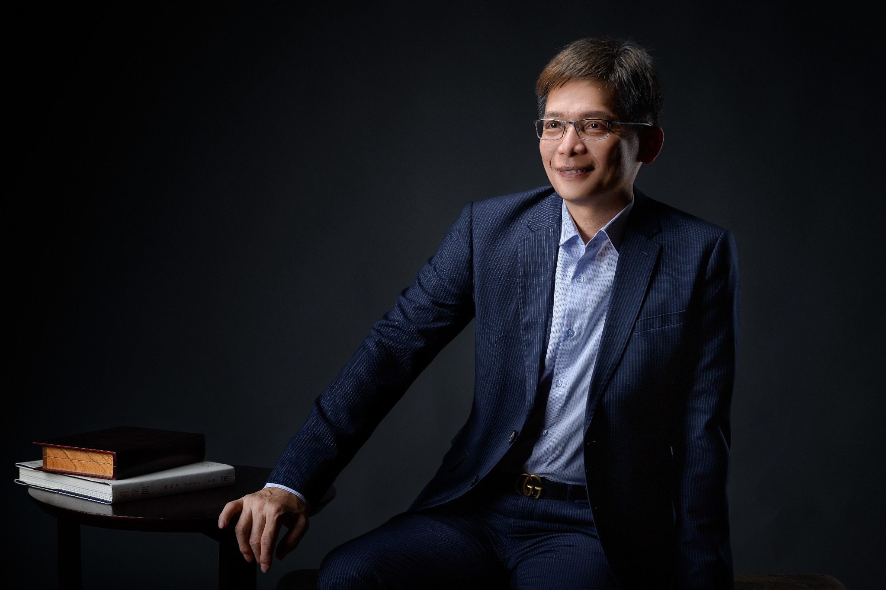

DEVELOPMENT PARTNERS
建設同業｜攜手合作，共創價值
本公司掌握多件整合率達 80% 以上的精選開發案件，誠摯邀請具備開發實力的建設公司，洽談開發、合建等多元合作模式，結合雙方優勢，加速推動開發進程。
建築，儲存城市珍貴的記憶，儲藏了家的溫暖
建築藝術是連結未來的進行式。

公司個案總銷金額合計
23案1,002億元
都更 17 案
947 億元
危老 6 案
55 億元
以地主立場為初心，以建築品質為堅持，以公平誠信為根本，創造土地最大價值，成就值得世代傳承的優質建築。
認識我們的理念本公司掌握多件整合率達 80% 以上的精選開發案件，誠摯邀請具備開發實力的建設公司，洽談開發、合建等多元合作模式，結合雙方優勢，加速推動開發進程。
本公司深耕危老重建，專精於全體地主 100% 同意案件的全案管理，從前期規劃、融資協助到興建管理，提供一站式專業服務，陪伴地主穩健推進重建，提升居住品質與資產價值。
統籌管理，專業一條龍。了解流程、權益與重建選擇。